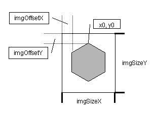

Warum schon wieder ein neues Grafiksetformat? Genau diese Frage stellte sich beim Entwurf des neuen Kartenmoduls; das Ergebnis ist eigentlich kein weiteres Grafiksetformat, denn mit dem hier vorgestellten Konzept ist die Anpassung an beliebige Formate möglich, solange die notwendigen Information über die Zellengeometrie zur Verfügung stehen. Dadurch können beispielsweise auch existierende Grafiksets anderer Clients unverändert übernommen werden, wenn die Grafiken im GIF oder PNG Format vorliegen. Man muss lediglich eine passende Datei cellgeometry.txt erzeugen, die die Geometrieinformation über das vorliegende Grafikset enthält.
Die Resourcenseite enthält grundlegenede Informationen zu Resourcen und Resourcenpfaden.
Magellan lädt Dateien (z.B. Grafiken) immer aus bestimmten Verzeichnissen, die auf den Verwendugszweck der Datei hinweisen. Bei den Grafikdateien für die Karte ist das 'images/map/', ein Grafikset besteht deshalb immer aus einem Verzeichnis oder einem Archiv (ZIP oder JAR Datei), das die Kartengrafiken in diesen Unterverzeichnissen enthält.
Ein Ressourcenpfad ist ein Verweis auf so eine Ressourcenquelle, beim Laden der Datei Ebene.png wird z.B. einfach der Ressourcenpfad, das Verzeichnis 'images/map' und der Dateiname 'Ebene.png' aneinander gehängt, um auf die Datei zuzugreifen, also z.B. 'C:\Grafiksets\images\map\Ebene.gif" wenn man "C:\Grafiksets" als Ressourcenpfad eingestellt ist. Beim Zugriff werden zunächst alle Ressourcenpfade durchsucht und dann, falls sie in keinem Ressourcenpfad gefunden werden konnte, auf die Standardgrafiken in der Magellan Jar-Datei zugegriffen.
Man kann ein Grafikset auch als Archiv (ZIP oder JAR Datei) an andere weitergeben, um die Handhabung zu vereinfachen. Dazu muss man nur das Set, also die Grafikdateien und cellgeometry.txt, in eine ZIP Datei oder JAR Datei packen. Die Dateien müßen aber auf jeden Fall innerhalb dieses Archivs in einem 'images/map/' Unterverzeichnis liegen. Dann kann jeder Magellan Benutzer das Grafikset nutzen, indem er dieses Archiv als Ressourcenpfad im Optionsdialog von Magellan einträgt.
Hier sind die Namen der Dateien aufgeführt, die die bisher existierenden Renderer verwenden, um bestimmte Objekte darzustellen. Für den vollständigen Namen, den die Datei tatsächlich tragen muss, ist jeweils die Endung ".png", ".gif" und/oder "-alpha.gif" anzuhängen.
Die Dateinamen müssen alle kleingeschrieben werden, sonst kann Magellan nicht auf sie zugreifen!
Alle Dateien sollten zusammen mit der Datei cellgeometry.txt (siehe 'Zellengeometrie') in einem gemeinsamen Verzeichnis 'images/map/' liegen.
Die Grafikdateien dürfen vom Format PNG oder GIF sein, von Alphakanälen bzw. Transparenz wird dabei in unterschiedlicher Art und Weise Gebrauch gemacht:
PNG: Wird eine Datei mit der Endung .png gefunden, wird sie verwendet und die enthaltene Alphakanalinformation direkt genutzt. PNG Dateien haben den Vorteil, dass sie 24 Bit Farbtiefe und einen integrierten 8-bit Alphakanal erlauben, leider unterstützt Java 1.2 noch keine PNG Grafiken, deshalb können nur Anwender mit einem JRE >= 1.3 solche Grafiksets benutzen.
GIF + Alphakanal: Wird keine Datei mit der Endung ".png" gefunden, sucht der Renderer nach einer Datei mit der Endung ".gif", die die RGB Informationen des Bildes enthält und einer Datei mit der Endung "-alpha.gif", die als Graustufenbild interpretiert und als Alphakanal für das andere GIF verwendet wird.
GIF: Gibt es keine Datei mit der Endung "-alpha.gif", aber eine Standard-GIF Datei, wird die darin enthaltenen RGB und Transparenzinformation genutzt.
Prinzipiell ist die Größe der Grafiken beliebig, muss aber innerhalb eines Grafiksets für alle Bilder gleich sein. Außerdem benötigt der Client Informationen über die Geometrie des Regionssechsecks, also dessen Eckkoordinaten, sowie dessen Position in der Grafik und die Gesamtgröße der Grafik. Das sieht dann ungefähr folgendermaßen aus:
x0=32 <- x-Koordinate des Eckpunktes auf 12 Uhr x1=63 <- x-Koordinate des Eckpunktes auf 2 Uhr x2=63 x3=32 x4=0 <- x-Koordinate des Eckpunktes auf 8 Uhr (Sechseckkoordinaten, also immer 0!) x5=0 <- x-Koordinate des Eckpunktes auf 10 Uhr (Sechseckkoordinaten, also immer 0!) y0=0 <- y-Koordinate des Eckpunktes auf 12 Uhr (Sechseckkoordinaten, also immer 0!) y1=16 <- y-Koordinate des Eckpunktes auf 2 Uhr y2=47 y3=63 y4=47 y5=16 imgOffsetx=8 <- Abstand zwischen linkem Sechsecksrand und Grafikrand imgOffsety=8 <- Abstand zwischen oberem Sechsecksrand und Grafikrand imgSizex=80 <- Breite der Grafikdatei imgSizey=80 <- Höhe der Grafikdatei
Alle Angaben sind hier in Pixel. Entspricht die Breite und Höhe des Regionssechsecks der der Grafikdatei, gibt es keine Überlappungen beim Zeichnen der einzelnen Grafiken. Wählt man die Grafikgröße jedoch größer als die des Regionssechsecks, so ergeben sich Überlappungen beim Zeichnen der Grafiken, abhängig vom Wert imgOffsetx/y über, unter, links oder rechts des Regionssechsecks. Zusammen mit der Ausnutzung von Transparenzinformation in den Grafiken lassen sich dadurch allerlei Effekte erzeugen, z.B. kaum merkliche Uebergänge zwischen Regionen. Dabei ist zu beachten, dass auf allen Renderingschichten die Regionen von links oben zeilenweise nach rechts unten gezeichnet werden.
Die Datei mit diesen Informationen muss "cellgeometry.txt" heißen und im selben Verzeichnis (images/map/) wie die Grafiken liegen. Der Inhalt dieser Datei mag etwas obskur erscheinen, die Bedeutung sollte aber schnell klar werden, wenn man sich ihren Inhalt bei existierende Grafiksets ansieht.
Magellan unterstützt fuer jede Teilschicht der Karte verschiedene 'Renderer', also Submodule, die die Grafikdateien auf den Bildschirm bringen. Sie sind in mehreren Schichten angeordnet, um eine festgelegte Reihenfolge beim Rendern zu haben, die sich in der Tiefenanordnung der gezeichneten Grafiken wiederspiegelt. Die Reihenfolge ist derzeit:
D.h. dass frühere Schichten durch spätere Schichten überdeckt werden. Im Augenblick gibt es nur einen Standardrenderer für jede der Schichten, diese sollten aber für die meisten Zwecke ausreichend flexibel sein.
Beim Entwurf der Grafiken und beim Festlegen eventueller Ueberlappungen der Grafiken ist zu beachten, dass auf allen Renderingschichten die Regionen von links oben zeilenweise nach rechts unten gezeichnet werden.
Es ist übrigens sehr simpel, neue Renderer zu programmieren, um z.B. weitere Objekte auf der Karte oder bestimmte Regionseigenschaften darzustellen.